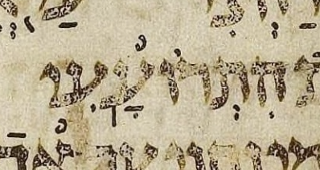
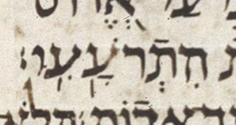
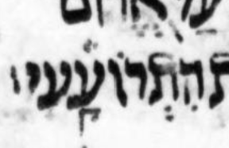
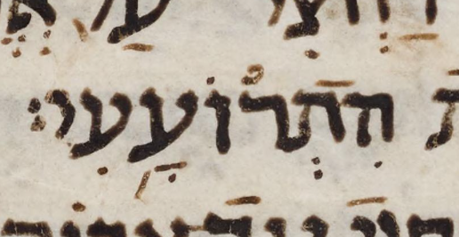
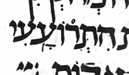

← Back to the case register.
Aleppo has no meteg after the silluq at Ps. 60:10.

Leningrad has a meteg after the silluq at Ps. 60:10.

Cambridge has no meteg after the silluq at Ps. 60:10.

Sassoon has no meteg after the silluq at Ps. 60:10.

St. Petersburg Evr. II B 55, identified in MAM by the siglum ל-א, is a manuscript of the Prophets and Writings close to the Aleppo Codex. The National Library of Israel presents it together with its direct continuation, Evr. II B 247, but this crop belongs to Evr. II B 55. At Ps. 60:10 it has the silluq alone in this word.
